l界面布局
WEB管理界面由一级标题栏、二级标题栏、页签、功能区、快捷操作区及工具条组成，如下图所示。
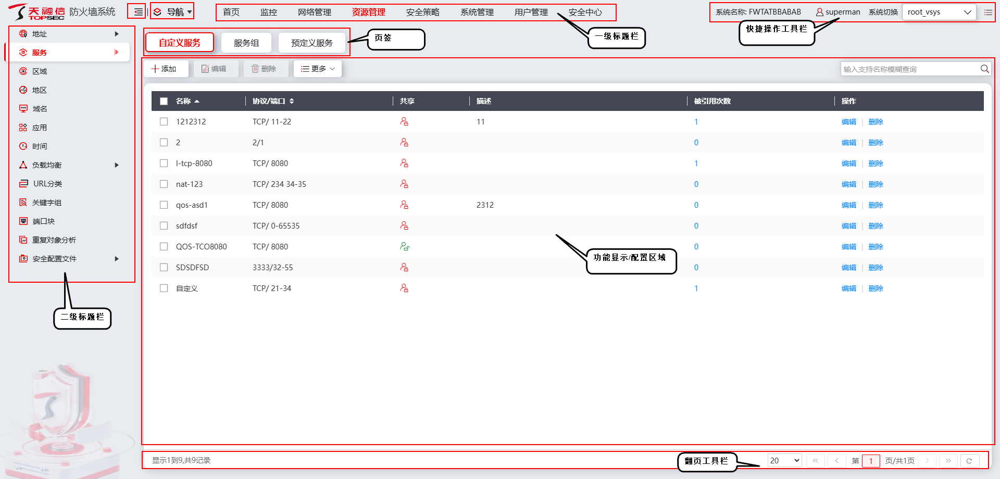
各个图标的说明如下：
图标 |
说明 |
|
|---|---|---|
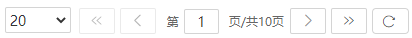 |
一页最多可显示的信息条数|显示第一页|显示上一页|显示第几页|显示下一页|显示最后一页|刷新当前页面数据 |
|
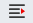 / |
点击“”可隐藏左侧导航菜单，图标切换为“”，点击“”可再次展示左侧导航菜单。 |
|
|
点击“”可展开导航菜单地图，点击菜单地图中菜单名称可直接访问对应界面。 |
|
系统名称 |
显示系统名称。 |
|
当前登录管理员。 |
||
系统切换 |
点击下拉列表可以切换系统。 |
|
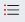 |
自动保存 |
是否开启自动保存配置的功能。 |
是否保存当前配置 |
||
实时展示防火墙与天融信云的连接状态。 |
||
CLI命令行管理界面。 |
||
查看本地告警信息。 |
||
点击该图标可退出系统登录。 |
||

l常规操作
管理页面中有很多图标作为功能配置操作的入口，下表对页面中出现的各类图标进行说明。
图标 |
名称 |
说明 |
|---|---|---|
|
添加 |
点击该图标，添加新条目。 |
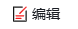 |
编辑 |
选中需要修改的条目，点击该图标即可对该条目重新进行编辑。 |
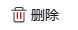 |
删除 |
选中需要删除的条目，点击该图标即可将该条目删除。 |
|
更多 |
点击该图标可下滑出更多功能按钮，例如“清空”。 |
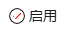 |
启用 |
选中需要启用的条目，点击该图标即可启用该条目。 |
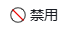 |
禁用 |
选中需要禁用的条目，点击该图标即可禁用该条目，此时该配置项所在行变为深灰色。 |
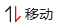 |
移动 |
选中需要移动的条目，在弹出的对话框中，选中该条目移动的目的位置。 |
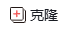 |
克隆 |
选中需要复制的条目，点击该图标即可复制该条目。 |
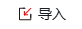 |
导入 |
点击该图标，在弹出的对话框中，配置导入信息，即可完成导入。 |
导出 |
选中需要导出的条目，点击该图标，在弹出的对话框中，选择条目的保存地址，即可完成导出。 |